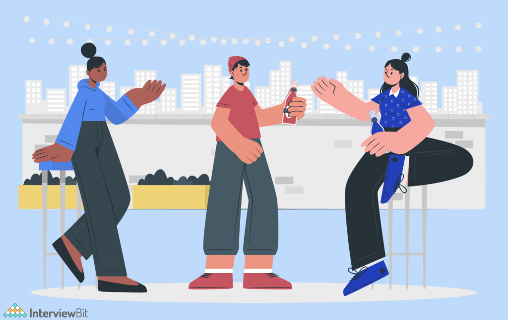

The creation of a landing page demands a basic understanding of HTML and CSS. Making a landing
page requires a lot of ingenuity. You will learn how to build a footer and header, construct columns,
align objects, and separate sections. You must utilize CSS with caution so that elements do not
overlap. You will also deal with color combinations, padding, margins, section, paragraph, and box
spacing. Colors should blend effectively in various areas or backgrounds.
The Event or Conference Web Page

Once again, this is a simple project with which you may explore. It will entail the creation of a static
page that will present the specifics of an event (conference, webinar, product launch, etc.). This project
will need the use of both HTML and CSS.